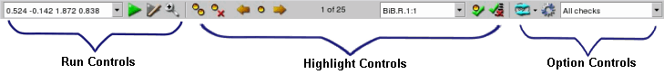

The
Calibre RealTime integrated toolbar in Pyxis Layout has selections
for run control, highlight control, and option settings.
The toolbar is shown in the
following figure. See “Invoking Pyxis Layout with Calibre RealTime” for information on how to invoke
Pyxis Layout with Calibre RealTime enabled.
Figure 1. Calibre
RealTime Integrated Toolbar